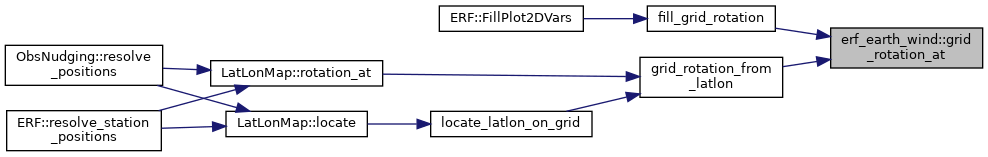
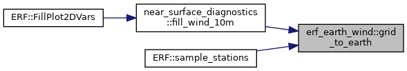
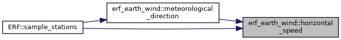
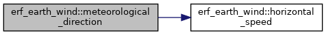
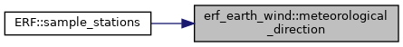

- Generated by
 1.9.1
1.9.1
|
ERF
Energy Research and Forecasting: An Atmospheric Modeling Code
|
Functions | |
| AMREX_GPU_HOST_DEVICE AMREX_FORCE_INLINE void | grid_to_earth (amrex::Real u, amrex::Real v, amrex::Real cos_alpha, amrex::Real sin_alpha, amrex::Real &u_east, amrex::Real &v_north) noexcept |
| AMREX_GPU_HOST_DEVICE AMREX_FORCE_INLINE amrex::Real | horizontal_speed (amrex::Real u_east, amrex::Real v_north) noexcept |
| AMREX_GPU_HOST_DEVICE AMREX_FORCE_INLINE amrex::Real | meteorological_direction (amrex::Real u_east, amrex::Real v_north, amrex::Real missing_value) noexcept |
| AMREX_GPU_HOST_DEVICE AMREX_FORCE_INLINE void | grid_rotation_at (const amrex::Array4< const amrex::Real > &ll, int ilo, int ihi, int i, int j, amrex::Real &cos_alpha, amrex::Real &sin_alpha) noexcept |
|
noexcept |
Referenced by fill_grid_rotation(), and grid_rotation_from_latlon().

|
noexcept |
Referenced by near_surface_diagnostics::fill_wind_10m(), and ERF::sample_stations().

|
noexcept |
Referenced by meteorological_direction(), and ERF::sample_stations().

|
noexcept |
Referenced by ERF::sample_stations().

